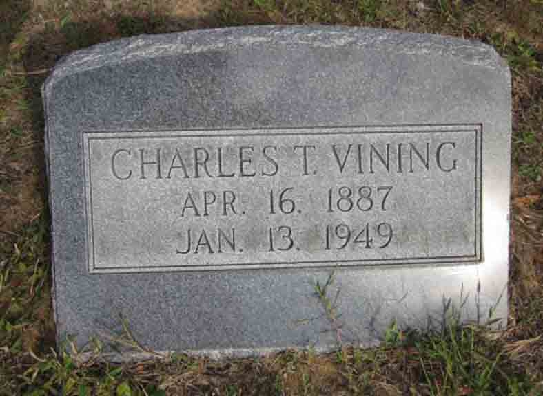
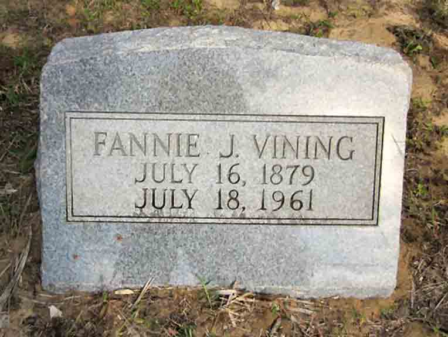

Documentation for Charles Thomas Vining - Fannie Jones
Death Data
Gravestones for Charles Thomas Vining and Fannie (Jones) Vining, in LaGrange Cemetery, Mims, Brevard County, Florida (from Find A Grave):

